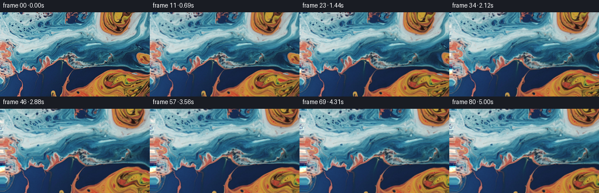
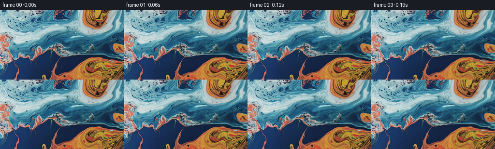

← 本轮 smoke 总览traex/DeepSeek-V4.1-Flash · 0001_s0
vision-agent · 256×144 · 16.0 FPS · 81 帧 · 状态 complete · 输出 tokens 20194
原始任务a close up of a blue and orange liquid, camera pans left
当前保存结果
已保存候选与代码修改
这里按时间展示外部捕获的候选，每份均可单独播放。保存新版本不等于完成视觉检查；下方工具证据记录实际看过的图。
候选 01 · 2026-11-08T23:32:40.659749+00:00 · 点开播放与检查图
inspection.png

transition_check.png

代码变化
--- 上一保存版本
+++ 本次保存版本
@@ -0,0 +1,125 @@
+from pathlib import Path
+
+import numpy as np
+from PIL import Image
+from scipy.ndimage import map_coordinates
+
+import artifact_io
+
+
+CASE_DIR = Path(__file__).resolve().parent
+FRAME_COUNT = 81
+WIDTH = 256
+HEIGHT = 144
+FPS = 16.0
+
+
+def _extend_texture(image):
+ """Add the small off-screen margin needed by the camera and fluid warp."""
+ left = 28
+ right = 7
+ top = 7
+ bottom = 7
+
+ # A row-wise color-offset copy continues the edge exactly while avoiding
+ # the conspicuous bilateral symmetry of a simple mirror.
+ offset_x = 43
+ donor = image[:, offset_x : offset_x + left]
+ donor = np.roll(donor, 5, axis=0)
+ edge = image[:, :1]
+ donor_edge = image[:, offset_x : offset_x + 1]
+ left_patch = np.clip(
+ donor.astype(np.float32) + edge.astype(np.float32) - donor_edge.astype(np.float32),
+ 0,
+ 255,
+ ).astype(np.uint8)
+ left_patch = left_patch[:, ::-1]
+
+ padded = np.concatenate((left_patch, image), axis=1)
+ padded = np.pad(padded, ((0, 0), (0, right), (0, 0)), mode="symmetric")
+ padded = np.pad(padded, ((top, bottom), (0, 0), (0, 0)), mode="symmetric")
+ return padded
+
+
+def _backward_warp(padded, x, y):
+ sample_x = x + 28
+ sample_y = y + 7
+ coords = np.stack((sample_y, sample_x), axis=0)
+ warped = np.empty((HEIGHT, WIDTH, 3), dtype=np.float32)
+ for channel in range(3):
+ warped[..., channel] = map_coordinates(
+ padded[..., channel].astype(np.float32),
+ coords,
+ order=1,
+ mode="nearest",
+ prefilter=False,
+ )
+ return np.clip(warped + 0.5, 0, 255).astype(np.uint8)
+
+
+def _vortex_displacement(x, y, cx, cy, sigma, angle):
+ dx = x - cx
+ dy = y - cy
+ weight = np.exp(-(dx * dx + dy * dy) / (2.0 * sigma * sigma))
+ theta = angle * weight
+ cos_t = np.cos(theta)
+ sin_t = np.sin(theta)
+ warped_x = cx + cos_t * dx - sin_t * dy
+ warped_y = cy + sin_t * dx + cos_t * dy
+ return warped_x - x, warped_y - y
+
+
+def make_frame(image, frame_index):
+ if frame_index == 0:
+ return image.copy()
+
+ t = frame_index / (FRAME_COUNT - 1)
+ ease = t * t * (3.0 - 2.0 * t)
+ slow = ease * (0.86 + 0.14 * np.sin(np.pi * t))
+
+ yy, xx = np.mgrid[0:HEIGHT, 0:WIDTH].astype(np.float32)
+
+ # Camera pans left while moving in slightly, keeping the visible field
+ # inside the source image and making the parallax read as a real move.
+ zoom = 1.0 + 0.145 * slow
+ shift_x = 27.0 * slow
+ source_x = (xx - WIDTH * 0.5) / zoom + WIDTH * 0.5 - shift_x
+ source_y = (yy - HEIGHT * 0.5) / zoom + HEIGHT * 0.5 + 0.7 * slow
+
+ # Slow, structure-following liquid motion. The vortices sit on the two
+ # strongest existing eddies; the weak field in the center keeps the blue
+ # marbling alive without making the image feel rubbery.
+ vx1, vy1 = _vortex_displacement(xx, yy, 209.0, 22.0, 48.0, 0.19 * slow)
+ vx2, vy2 = _vortex_displacement(xx, yy, 218.0, 121.0, 44.0, -0.15 * slow)
+ vx3, vy3 = _vortex_displacement(xx, yy, 20.0, 82.0, 38.0, 0.08 * slow)
+
+ wave_phase = 2.0 * np.pi * t
+ fluid_x = (
+ 1.45 * slow * np.sin(2.0 * np.pi * yy / 67.0 + 0.65 * wave_phase)
+ + 0.55 * slow * np.sin(2.0 * np.pi * (xx + yy) / 101.0 - 0.35 * wave_phase)
+ )
+ fluid_y = (
+ 1.05 * slow * np.sin(2.0 * np.pi * xx / 91.0 - 0.5 * wave_phase)
+ + 0.35 * slow * np.sin(2.0 * np.pi * (xx - yy) / 83.0 + 0.3 * wave_phase)
+ )
+
+ source_x = source_x + vx1 + vx2 + vx3 + fluid_x
+ source_y = source_y + vy1 + vy2 + vy3 + fluid_y
+
+ padded = _extend_texture(image)
+ return _backward_warp(padded, source_x, source_y)
+
+
+def main():
+ image = np.asarray(Image.open(CASE_DIR / "first_frame.png").convert("RGB"))
+ frames = np.empty((FRAME_COUNT, HEIGHT, WIDTH, 3), dtype=np.uint8)
+ for index in range(FRAME_COUNT):
+ frames[index] = make_frame(image, index)
+
+ # The contract requires an exact, unprocessed first frame.
+ frames[0] = image
+ artifact_io.save(frames, CASE_DIR)
+
+
+if __name__ == "__main__":
+ main()
可观测工具行为
命令 1 · 2026-11-08T23:30:05.974724+00:00/bin/bash -c "pwd && rg --files -g '"'!*.pyc'"' -g '"'!__pycache__'"' | sed -n '1,160p'"
exit 0 命令 2 · 2026-11-08T23:30:06.324182+00:00/bin/bash -c "printf '%s\\n' '--- prompt.txt ---'; sed -n '1,240p' prompt.txt; printf '%s\\n' '--- GENERATION_RULES.md ---'; sed -n '1,320p' GENERATION_RULES.md"
exit 0 命令 3 · 2026-11-08T23:30:06.646619+00:00/bin/bash -c "printf '%s\\n' '--- media probe ---'; file first_frame.png; identify first_frame.png 2>/dev/null || true; printf '%s\\n' '--- binaries ---'; command -v ffmpeg || true; command -v ffprobe || true; command -v python3 || true; printf '%s\\n' '--- dirs ---'; find . -maxdepth 2 -type d -print | sort | sed -n '1,120p'"
exit 0 命令 4 · 2026-11-08T23:30:15.061611+00:00/bin/bash -c "sed -n '1,260p' artifact_io.py"
exit 0 命令 5 · 2026-11-08T23:30:15.240958+00:00/bin/bash -c "cat task_spec.json; printf '\\n--- player refs ---\\n'; rg -n \"video|mp4|frames|canvas|player\" player_template.html | sed -n '1,140p'"
exit 0 命令 6 · 2026-11-08T23:30:15.806377+00:00/bin/bash -c "python3 - <<'PY'
from PIL import Image
import numpy as np
im=Image.open('first_frame.png')
print(im.mode, im.size, im.format)
a=np.asarray(im)
print(a.shape, a.dtype, a.min(), a.max(), a.mean(axis=(0,1)))
print('unique colors', len(np.unique(a.reshape(-1,3),axis=0)))
PY"exit 0 命令 7 · 2026-11-08T23:30:31.250025+00:00/bin/bash -c "python3 - <<'PY'
mods=['numpy','PIL','scipy','cv2','skimage','torch']
for m in mods:
try:
x=__import__(m); print(m,'ok',getattr(x,'__version__',''))
except Exception as e: print(m,'missing',type(e).__name__)
PY"
exit 0 命令 8 · 2026-11-08T23:30:36.477201+00:00/bin/bash -c "python3 - <<'PY'
import cv2
im=cv2.imread('first_frame.png')
print(im.shape)
for step in (8,16,24):
c=cv2.cvtColor(im,cv2.COLOR_BGR2LAB).astype('float32')
pyr=cv2.buildOpticalFlowPyramid(c, maxLevel=3, winSize=(21,21), withDerivatives=False)
print(step,pyr[0][0].shape)
PY"exit 1 命令 9 · 2026-11-08T23:31:28.759870+00:00/bin/bash -c "python3 - <<'PY'
from PIL import Image
import numpy as np
a=np.asarray(Image.open('first_frame.png')).astype(float)
print('mean |left-right|', np.abs(a[:,0]-a[:,-1]).mean())
print('mean |left-2ndlast|', np.abs(a[:,0]-a[:,-2]).mean())
print('mean |reflect seam|', 0)
print('top/bottom diff', np.abs(a[0]-a[-1]).mean())
PY"exit 0 命令 10 · 2026-11-08T23:32:18.587896+00:00/bin/bash -c 'python3 generate.py'
exit 1 命令 11 · 2026-11-08T23:32:34.250818+00:00/bin/bash -c "python3 generate.py && python3 - <<'PY'
import numpy as np
from PIL import Image
from pathlib import Path
im=np.asarray(Image.open('first_frame.png').convert('RGB'))
frames=np.stack([np.asarray(Image.open(f'frames/{i:02d}.png')) for i in range(81)])
print('shape',frames.shape,'dtype',frames.dtype)
print('frame0 exact:',np.array_equal(frames[0],im))
d=np.abs(frames[1:].astype(float)-frames[:-1].astype(float))
print('adjacent MAE min/mean/max:',d.mean((1,2,3)).min(),d.mean(),d.mean((1,2,3)).max())
print('first delta MAE:',d[0].mean(),'last delta MAE:',d[-1].mean())
print('first/last MAE:',np.abs(frames[-1].astype(float)-frames[0]).mean())
PY"exit 0 命令 12 · 2026-11-08T23:32:53.993344+00:00/bin/bash -c "python3 - <<'PY'
from pathlib import Path
import json, numpy as np
p=Path('pixels.npz')
z=np.load(p)
print('npz keys',z.files,'shape',z['pixels'].shape,'dtype',z['pixels'].dtype)
print('files', {x.name:x.stat().st_size for x in Path('.').iterdir() if x.is_file()})
print('frame pngs',len(list(Path('frames').glob('*.png'))))
html=Path('index.html').read_text()
print('player ready marker', 'window.__pixelReady=true' in html, 'html bytes',len(html))
PY"exit 0 命令 13 · 2026-11-08T23:33:02.291989+00:00/bin/bash -c 'command -v chromium || command -v chromium-browser || command -v google-chrome || true; command -v node || true; command -v ffmpeg || true; command -v ffprobe || true'
exit 0 命令 14 · 2026-11-08T23:33:02.823297+00:00/bin/bash -c "python3 - <<'PY'
import numpy as np
from PIL import Image
fs=np.stack([np.asarray(Image.open(f'frames/{i:02d}.png')).astype(np.float32) for i in (0,1,20,40,60,80)])
for i in range(1,len(fs)):
print(i, 'MAE', np.abs(fs[i]-fs[i-1]).mean(), 'PSNR', 10*np.log10(255**2/max(np.mean((fs[i]-fs[i-1])**2),1e-9)))
# Seam strength versus natural adjacent-column differences.
for idx in (0,20,40,60,80):
a=np.asarray(Image.open(f'frames/{idx:02d}.png')).astype(float)
seam=np.abs(a[:,28]-a[:,27]).mean(); nat=np.abs(a[:,1:]-a[:,:-1]).mean()
print('frame',idx,'seam',round(seam,2),'natural',round(nat,2),'ratio',round(seam/nat,2))
PY"exit 0 命令 15 · 2026-11-08T23:33:16.515356+00:00/bin/bash -c "git status --short && git diff --stat && git diff -- generate.py | sed -n '1,260p'"
exit 0 命令 16 · 2026-11-08T23:33:30.223011+00:00/bin/bash -c "python3 - <<'PY'
from pathlib import Path
import hashlib
p=Path('pixels.npz')
print('before',hashlib.sha256(p.read_bytes()).hexdigest())
PY
python3 generate.py
python3 - <<'PY'
from pathlib import Path
import hashlib, numpy as np
from PIL import Image
p=Path('pixels.npz')
print('after ',hashlib.sha256(p.read_bytes()).hexdigest())
z=np.load(p)['pixels']
assert z.shape==(144,256,81) and z.dtype==np.uint32
first=np.asarray(Image.open('first_frame.png').convert('RGB'))
assert np.array_equal(np.asarray(Image.open('frames/00.png')),first)
assert len(list(Path('frames').glob('*.png')))==81
print('validation: OK (81 frames, 256x144 RGB, exact first frame)')
PY"exit 0 视觉工具实际返回图片 1

视觉工具实际返回图片 2

视觉工具实际返回图片 3
视觉工具实际返回图片 4

视觉工具实际返回图片 5
保存候选 1 份；完成命令 16 次；可验证图片返回 5 张。原始 API 响应与完整日志保留在本地。